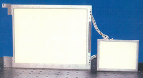

Divergent Angle Rotator
With the Divergent Angle Rotator technology, this backlighting system is designed using LEDs as the light source. The Divergent Angle Rotator backlight architecture reduces or eliminates the head beams non-uniformity problem associated with a point-like light source without sacrificing brightness. The LED backlight includes white LEDs and RGB LEDs. The LED PC Board is made from an insulated metal substrate for heat management.
Color ManagementThe RGB LED Backlight uses a color management system feedback controller to provide light of the specified color coordinate or color temperature.
Heat managementClio Technologies designs metal chassis to dissipate heat generated by the LEDs, so that no fan is needed for the backlight.
Dual Mode Backlighting System for Day or Night View
Using a color filter, this single light pipe backlighting system has two operational modes for day or night vision operation. The Dual Mode Backlighting System can illuminate a given display with lights of different spectrums and intensities. Output lights for both modes have the same angle. With the appropriate color filter placed between the CCFLs or LEDs and the light pipe, the Dual Model Backlighting System produces a spectrum of output light that is compatible with night vision goggles in the night vision mode.
Micro-Prism Edge-Lit backlight
Clio Technologies' Advanced Micro-Prism Edge-Lit backlight positions the LEDs or CCFLs along the edge of the light guide outside of the viewing area, so that the viewer does not look directly at the LEDs or CCFLs. The lamp placement enables heat to be transferred to the backlight and system chassis, so that the heat effect on AMLCD is negligible.
Viewing Area Expander Backlight
With a novel beam expander technology, this backlighting system essentially illuminates a lighting area from edge to edge. This viewing area expanding technology is especially valuable for displays requiring a very limited border area.
Wide Viewing Angle Flat Collimator Backlights
This backlighting system utilizes the Divergent Angle Rotator technology to achieve a wide viewing angle of ±45°C in the horizontal direction. This feature can be used for large display applications viewed by more than one person. A viewing angle expanding film can be used to increase the viewing angle to over ±60°C.
Custom Design Backlighting Systems
Clio Technologies can create custom designs to fit special display backlighting applications. In most cases, Clio Technologies can develop prototypes in just a couple of weeks. We have developed backlighting systems with the following requirements for our customers:
- Wide viewing angle of ±60°C in the horizontal direction
- Wide viewing angle in the vertical direction
- Peak intensity tilted towards one direction by a predetermined angle
- Backlight system without a border area, so that the total area of the backlight was the size of the display itself.